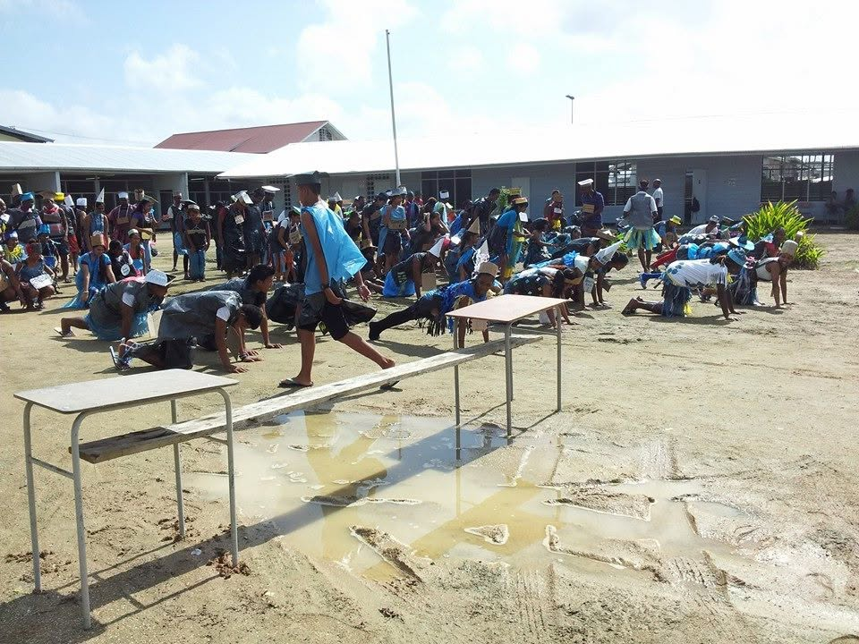
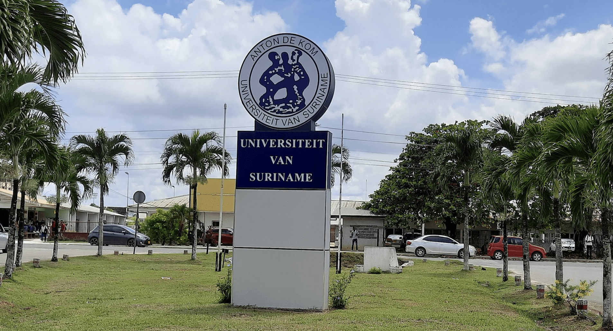

Achtergrond
Ik ben Eeshanie Lachman, geboren op 7 september 2004, en ik ben opgegroeid in een zorgzame familieomgeving. Ik woon samen met mijn ouders, grootouders en nicht, en als oudste kind binnen het gezin draag ik een zekere verantwoordelijkheid. Daarnaast help ik als vrijwilliger in het bedrijf van mijn vader, waar ik administratieve werkzaamheden verricht en zo werkervaring opdoe.
Interesses
Mijn interesses liggen zowel op creatieve als actieve gebieden, en ik sta altijd open om iets nieuws te leren.
Bezochte scholen

HAVO
Diploma behaald in 2023

Anton de Kom Universiteit
Schakelprogramma Geowetenschappen (niet afgerond)

UNASAT Huidig
Software Engineering (huidige studie)